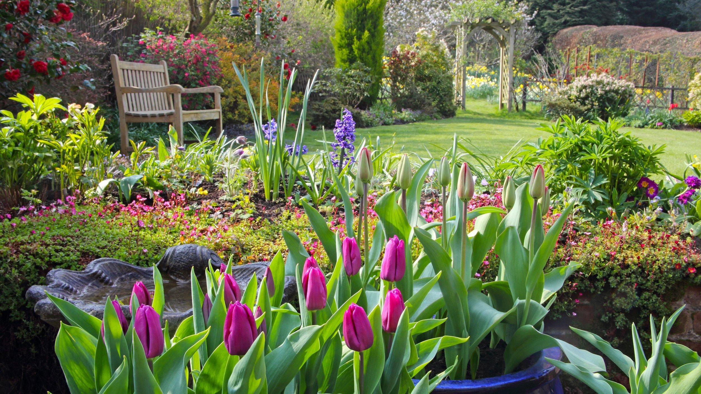

Landscaping
General residential yard work, cleanups, and maintenance.
A cleaner brand and stronger page structure make the offer easier to understand.
A landscaping and hardscape business serving the Inland Empire with an emphasis on budget-friendly service and drought-tolerant work.
Photo highlights
Pulled from the business's public web presence so the homepage feels more like the company itself.

A straightforward menu of work the business already appears to offer publicly, organized so people can understand it at a glance.
General residential yard work, cleanups, and maintenance.
Patios, stone, and durable outdoor features.
Water-smart plantings and lower-maintenance layouts.
A simple flow that helps homeowners request estimates.
Real photos from the public Squarespace site, used to make the homepage feel more grounded and local.


Built around the city listed in public directories and the surrounding nearby cities that make sense for this business.
This draft can grow into separate landing pages for the most important jobs or customer types.
Make it easy to call or request an estimate in one tap.
Separate the highest-value jobs into dedicated pages for better clarity and SEO.
Add real project photos, review snippets, and trust signals as they become available.
Keep the site focused on Fontana and nearby cities so it feels local fast.
Call (909) 279-0625 or use a simple form to request help. The next version of this site can also link to photos, reviews, and service-specific pages.